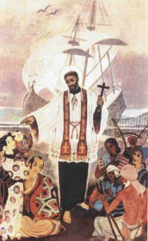
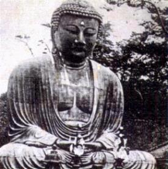
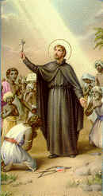
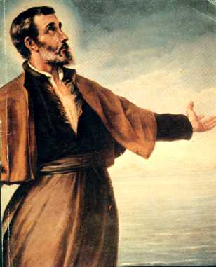
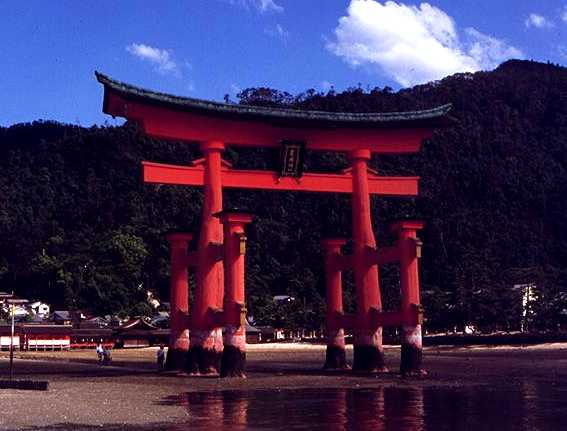
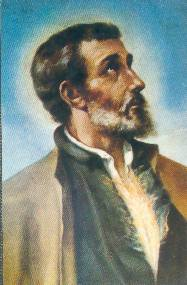
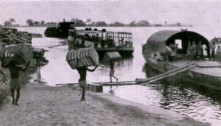
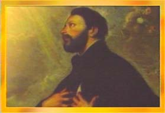

Xavier e seus companheiros chegaram
a cidade de Kagoshima em Agosto de
1549. A família de Angero logo
se tornou cristã. Todos os dias, quando Xavier tocava a sineta convocando o povo
para rezar e conhecer a fé cristã, eles estavam lá, prontos para aprender e ajudar.
Logo a fama do Santo se espalhou e o rei quis conhecê-lo. Todavia Paulo de Santa
Fé se apresentou primeiro ao monarca, conduzindo uma imagem de Nossa Senhora
e outra de Cristo. O rei adorou as imagens e mandou que todos os presentes
fizessem o mesmo. Entusiasmado com a nova religião, anunciou a elaboração de um
decreto autorizando as pessoas que quisessem, tornarem-se cristãs. Entretanto
com o passar dos dias, o rei esperava comerciar com os portugueses, mas ao
observar que os barcos lusitanos não aportavam Kagoshima ficou aborrecido com
Xavier, e incitado pelos bonzos, baixou decreto proibindo os seus súditos de se
fazerem cristãos, sob pena de morte. Xavier para evitar confrontos, deixou
Angero dirigindo a pequena comunidade formada e decidiu ir para outro local
com seus companheiros. Dez anos mais tarde, o médico Dr. Luis de Almeida, que
era Irmão Coadjutor da Companhia de JESUS, visitou esta pequena comunidade
cristã de Kagoshima e ficou impressionado com o fervor espiritual dos cristãos.
Xavier mudou-se para Hirado, ao norte de Nagasaki. O Governador da cidade
acolheu bem os missionários, de modo que em poucas semanas ele e seus
companheiros puderam fazer muito mais do que um ano em Kagoshima. O Santo
deixou esta Comunidade Cristã a cargo de um Padre Jesuíta e viajou para
Yamaguchi com o Irmão Fernandez e um japonês convertido.
Yamaguchi era uma cidade com
aproximadamente cem mil casas na ilha de Hondo a 40 quilômetros da costa.
As casas estavam construídas na ladeira da 
montanha entre
pitorescos jardins. Havia também cem Mosteiros Budistas. Ao som do gongo, o
povo compreendia que era o momento de se prostrar diante dos deuses que estavam
em seus altares iluminados por lâmpadas de variadas cores e envoltos em fumo de
incenso. Num dia do mês de Outubro de 1550 apareceram circulando pelas ruas
dois desconhecidos: o Santo e o irmão Fernandez. De momento em momento
faziam uma pequena parada, abriam um caderno e Xavier com uma pronúncia
meio "carregada"
lia em japonês: "Há um só DEUS
verdadeiro, criador de tudo o que existe; este DEUS se fez homem e morreu para
nos salvar; temos uma única alma, e existe um Céu e um Inferno..." As vezes lia o irmão Fernandez, que sabia um pouco mais de japonês.
Muitas pessoas riam e se desviavam daquela peregrina pronunciação. Outras ficavam
impressionadas pela insistência dos pregadores, a paciência com que sofriam os
insultos e as pedradas dos meninos. E comentavam que aqueles dois homens vindo
de terras tão distantes a pregar a sua doutrina, tinham que ser pessoas de muita
estima.
Xavier e seu companheiro foram ao rei do lugar
pedir permissão para pregar o Evangelho de JESUS CRISTO. O monarca estava curioso
e interessado em conhece-los, porque já tinha ouvido várias referências sobre aqueles
dois missionários. Xavier e Fernandez se ajoelharam diante do rei e fizeram uma grande
reverência, como era o costume local. Com grande amabilidade, o rei perguntou a Xavier
por sua doutrina. Com um olhar, Xavier pediu a Fernandez que lesse o caderno onde se
encontrava a descrição da Criação, dos Mandamentos, do Juízo Final, do Céu e do Inferno.
E aqui, com energia, Irmão Fernandez condenou a idolatria e o vício da carne (sexualidade),
afirmando: "O homem que comete tais pecados
é pior do que um cachorro, do que um porco..." O rei ficou enfurecido.
Fernandez chegou a imaginar que ele ia mandar cortar-lhe a cabeça. Ao terminar a leitura,
o rei levantou-se e sem dizer uma palavra, despediu os dois. Do lado de fora do palácio
as pessoas os insultaram com palavras e gestos. Xavier não deu importância. Deixou que
os ânimos se apaziguassem por si só. Como na verdade o rei não lhes havia proibido,
continuou normalmente com a pregação. Dois meses depois decidiu ir a Meaco
(hoje cidade de Kyoto), que era a capital do Império Japonês. Queria conseguir
permissão para pregar o Evangelho em todo o Japão. Todavia
antes de viajar, foi com seus companheiros Padre Torres e Irmão Fernandez à ilha
Firando, onde estava um barco português. O senhor da ilha os recebeu muito bem e
em poucos dias, conseguiu converter muitas pessoas. Depois de algumas semanas
seguiram para Meaco. Era uma cidade com cerca de 90.000 casas, tinha uma
Universidade e mais de 200 mosteiros budistas. Foi uma viagem muito cansativa,
Xavier e seus companheiros percorreram mais de 400 quilômetros por mar e terra,
suportando dias inteiros em jejum, escalando montanhas e vales, cortando rios e
lagos gelados. Iam descalços por caminhos de gelo e neve, até sangrar os pés.
Com as pernas inchadas e quase "mortos
de fome", chegaram em Meaco no mês de Fevereiro de 1551,
mas a cidade estava dominada por um exército inimigo. O Japão do século XVI era
um mosaico de reinos feudais em guerra uns contra os outros. O Imperador era uma
figura decorativa, que não mandava nada. Xavier quis visitá-lo, mas lhe impediram
vendo-o tão pobremente vestido. Por isso, observando o comportamento da monarquia,
decidiu voltar a Yamaguchi. Agora Xavier já possuía mais experiência de vida, não iria
se apresentar de qualquer jeito ao rei. Ele compreendeu que as autoridades japonesas
só davam valor a quem se apresentasse vestido elegantemente. Por essa razão, para
que ele fosse bem recebido e sua doutrina fosse apreciada, ele não podia se apresentar
com a mesma pobreza que vivia, porque no Japão, ela era um sério obstáculo para
cativar o chefe japonês de cada feudo.
OUTRA VEZ EM YAMAGUCHI

Voltou com os companheiros para
a ilha Firando onde guardava os presentes que tinha trazido da Índia para o Imperador
do Japão. Decidiu oferecê-los ao rei de Yamaguchi. Com este propósito o Santo se
vestiu ricamente com as roupas que os portugueses lhe deram e organizou uma solene
cavalgada até a entrada do palácio. Ao chegar, como combinaram, os canhões dos navios
portugueses ancorados no porto dispararam festivamente. O rei ficou admirado e recebeu
Xavier com muita alegria, colocando-o sentado a seu lado. E mais surpreendido ficou
o monarca, com a quantidade notável de presentes que recebeu. Quis retribuir, mas
Xavier não aceitou. Somente pediu permissão para pregar a lei de DEUS. O rei não
só autorizou como também lhe ofereceu um templo budista antigo, que poderia ser
utilizado como centro de catequese.
Conseguindo a autorização oficial, o Santo
começou a pregar pelas ruas e a discutir com os sacerdotes budistas, a quem sempre
deixava "de boca aberta", sem palavras. Mas era uma caminhada árdua e penosa. É como
ele mesmo dizia: "Na Índia pescava
almas com a rede; no Japão só conseguia pescá-las com anzol, isto porque, poucos
se convertiam". Mas nunca se esquecia do caráter
deles: "El japonês se convertirá
si el misionero practica lo que predica.", (O japonês
se converterá se o missionário praticar o que ele ensina).
Um dia Fernandez pregava na rua
e lhe cuspiram no rosto. Ele limpou e continuou pregando. Um dos ouvintes raciocinou:
"homens que sofrem tais coisas e não
reagem, tem uma santa religião!" Foi encontrar-se com Xavier
e pediu para ser instruído no cristianismo e ser batizado. Logo, outras pessoas seguiram
o mesmo exemplo. Dia e noite, curiosos e pessoas que queriam solucionar as suas dúvidas,
assediavam os missionários com perguntas. E assim, os missionários tornaram-se
notícia presente em toda a cidade, o comentário era geral, sobre eles e sobre
a lei de DEUS, primordialmente depois que o homem mais sábio da redondeza,
abandonou o budismo e se converteu ao cristianismo, adorando o CRIADOR. Xavier
pregava com êxito e batizava muita gente. Foram convertidas mais de duas mil
pessoas, que procuravam com interesse conhecer o cristianismo e seguir os
Mandamentos de DEUS. Entre eles se converteu também um conhecido jovem que
cantava nas ruas tocando um bandolim. Ele ficou entusiasmado com Xavier, que lhe
instruiu e batizou, dando-lhe o nome de Lorenzo. Ficou empregado junto a equipe
do Santo como intérprete e Catequista. Lorenzo aplicou-se a fundo na doutrina
cristã e tornou-se um irmão coadjutor jesuíta. Depois que Xavier retornou a
Índia, ele evangelizou o seu país com um zelo devorador durante 30 anos. Os
cristãos de Yamaguchi ficaram aos cuidados do Padre Cosme de Torres e do Irmão
Fernandez, quando Xavier viajou para atender ao convite do rei de Bungô. Na cidade
do rei o Santo já tinha fama e por isso, foi recebido triunfalmente. Na verdade
o terreno estava propício e aconteceram milhares de conversões, mais de sete
mil cristãos elevaram o seu coração a DEUS. Trezentos anos depois, apesar das
perseguições políticas e religiosas que matou muita gente, os descendentes
daqueles cristãos ainda mantinham viva a sua fé. Por tudo isso, embora tenha
passado transtornos e dificuldades no Japão, Xavier dizia: "Não existe entre os infiéis nenhum povo
mais bem dotado do que o japonês."
DE VOLTA A GOA E MALACA

Xavier escreveu: "Os habitantes do Japão foram a melhor descoberta que aconteceu até agora
nos meus planos." Mesmo assim, alimentava o desejo de conhecer
o povo da China. A caminho de Goa passou em Sanchoão, uma pequena ilha chinesa onde os
portugueses comerciavam, e estava a 10 quilômetros do continente. Seguiu para Málaca.
Lá encontrou diversas correspondências, sendo que uma era de Ignácio
de Loyola que o nomeava Superior Provincial para toda a Índia.
Em fins de Janeiro de 1552 chegaram a Goa.
Xavier organizou todos os assuntos e nomeou superiores para os diferentes cargos da
Província. Em meados de Abril deste mesmo ano viajou novamente para Málaca.
O DEMÔNIO EM MÁLACA
Xavier planejou levar em sua companhia, o seu
grande amigo Diego Pereira que era o comandante da nave Santa Cruz que estava a sua
disposição, para entrar na China. Pereira iria como embaixador do rei de Portugal e ele
iria como agregado da embaixada. Levariam muitos presentes para o Imperador
Chinês a quem pediriam permissão para pregar o Evangelho em todo o Império. Acontece
que Don Álvaro de Ataíde que estava em Málaca, ambicionava a posição que Xavier
queria dar a Diego. Sendo ele Capitão do Mar, não concordou que Diego fosse como
Embaixador para a China por duas razões: primeiro por direito por ser ele o chefe da
frota naval portuguesa, e por isso, achava que devia ser o escolhido e segundo, porque
era inimigo pessoal de Diego Pereira. Por essa razão, assim que Xavier chegou, deu
ordem a seus funcionários de tomarem o timão da nave Santa Cruz que estava com
Pereira. Isto representava apoderar-se do navio de Diego. Em vão Xavier usou de todos
os argumentos para que Ataíde desistisse de seus propósitos. Mas ele manteve-se irredutível,
até que por fim, concordou em deixar zarpar a nave, mas sem Pereira. Desse modo, não
tendo outra alternativa, penalizado por não poder levar o seu grande amigo, no dia 18
de Julho de 1552 Xavier seguiu sozinho para a nova missão.
No dia 28 de Julho chegou a Baía de Singapura
de onde escreveu as suas últimas cartas: a Dom João III, a Diego Pereira, ao Vice-Rei
das Índias, ao Padre Gaspar Barzéu e a um pobre e analfabeto neófito japonês de nome
João.
NA ILHA DE SANCHOÃO

Em princípio de Setembro de
1552 desembarcou na Ilha. Pela sua proximidade com a cidade de Cantão na China
e pela disposição do porto que abrigava convenientemente as embarcações, era um
local ideal para os portugueses fazerem comércio com os contrabandistas chineses.
Entretanto estava proibido sob pena de morte, qualquer embarcação aproximar
ou entrar na China, sem uma prévia autorização. Aqueles navios que tentassem,
seriam presos, os tripulantes perderiam as mercadorias e o navio,
e as pessoas eram trancafiadas em terríveis calabouços.
Ao chegar em Sanchoão, Xavier foi
recebido com entusiasmo pelo pequeno grupo de portugueses que lá residiam
e colocaram as casas a sua disposição. Mas o Santo não aceitou, foi morar numa
pequena cabana coberta com palha, que cederam para ele e seus companheiros.
Também utilizava a cabana para confessar as pessoas e celebrar Missas. Um
chinês se ofereceu em troca de 20
quilos de pimenta, levar Xavier
e seus companheiros à noite até Cantão. O plano incluiria a hospedagem na casa
do chinês durante alguns dias para não despertar suspeitas e logo, numa noite, ele
os deixaria na cidade de Cantão. Mas a noticia espalhou. Os amigos e companheiros
de Xavier quando souberam daquele projeto, ficaram com medo do que poderia
ocorrer e desapareceram. Só permaneceu Antônio e Cristóvão, o malavar. Os
mercadores portugueses ao conhecerem as notícias, quiseram regressar a Málaca,
porque ficaram com medo dos chineses prenderem Xavier e depois decidirem
persegui-los também. Por isso pediram que o Santo não entrasse na China antes
deles zarparem. Na enseada de Sanchoão só ficou um junco e o navio Santa
Cruz que estava a disposição do Santo. Os dias passavam e o chinês não
aparecia para levar Xavier. A situação se agravou porque a ilha ficou
quase deserta e assim, ele ficou impossibilitado de continuar o seu apostolado.
Vivia naquela pobríssima cabana em companhia de seu fiel amigo Antônio de
Santa Fé, que trazia alimentos e água da tripulação do navio Santa Cruz, porque
de outro modo eles morreriam de fome. Um vento gelado varria diariamente
a ilha. Mal alimentado e sem agasalho o Santo contraiu uma
forte pneumonia. Sua vida começou a se apagar.

Próxima
Página 
 Página Anterior
Página Anterior
Retorna ao Índice